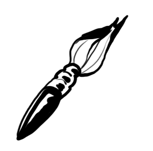
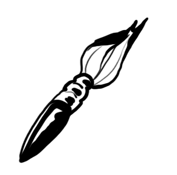
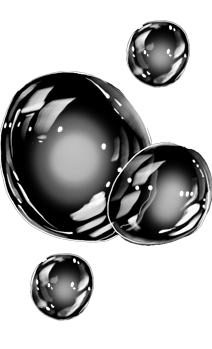
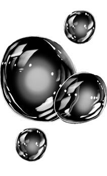
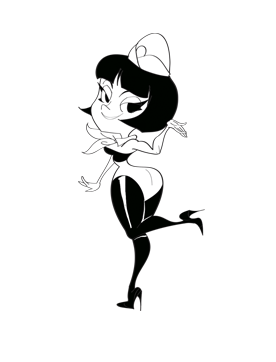
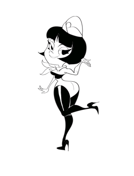

 



 



THE MAKERS OF EXCITING COMMUNICATION
De tout temps, la notoriété et l’image ont constitué les principaux enjeux d’une marque. Mais à l’heure du digital et dans un contexte de saturation généralisée, ces valeurs ne sont plus suffisantes. Aujourd’hui, la force d’une marque se mesure aussi et surtout à l’énergie qu’elle dégage. Les nouvelles technologies, les médias fragmentés et la génération connectée bouleversent l’idée d’audience captive et projettent les marques dans un espace en perpétuel mouvement. De fait, les marques qui libèrent le plus d’énergie sont celles qui ont le plus de chances d’émerger.
Énergiser oui, mais comment? Tout passe par un mode de pensée transversal et une démarche participative: créer du lien, proposer du contenu enrichi, générer de la conversation, se connecter avec son public via des expériences interactives... De l’énergie naît l’énergie.
Chez Numéro10, l’énergie est en nous. Au coeur de nos stratégies et de nos idées, elle nous pousse hors des sentiers battus. Nous la déployons quotidiennement pour imaginer des concepts de communication augmentée mêlant médias traditionnels et nouvelles technologies numériques, contenus enrichis et expériences de marque. Entre physique et digital, rien n’est figé, tout est vital. Bienvenue dans l’ère du phygital.